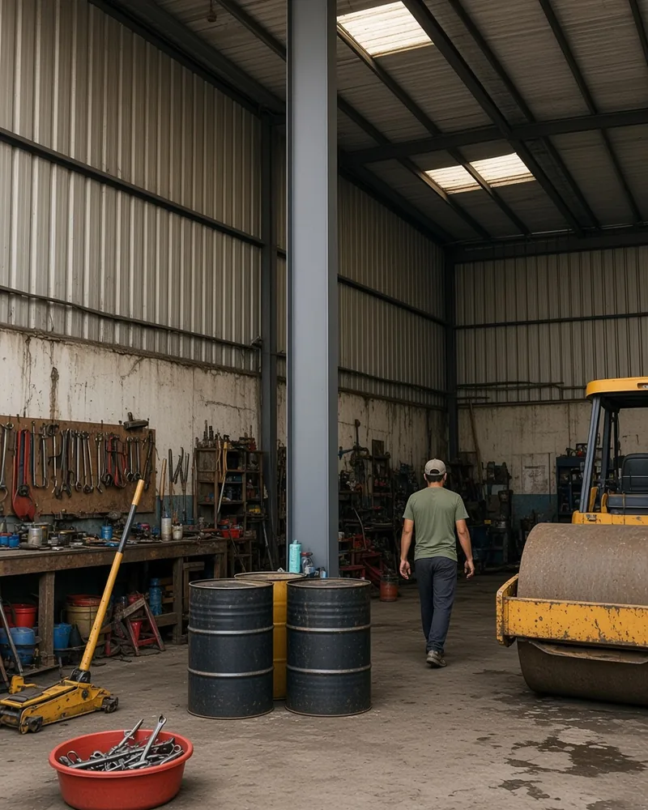
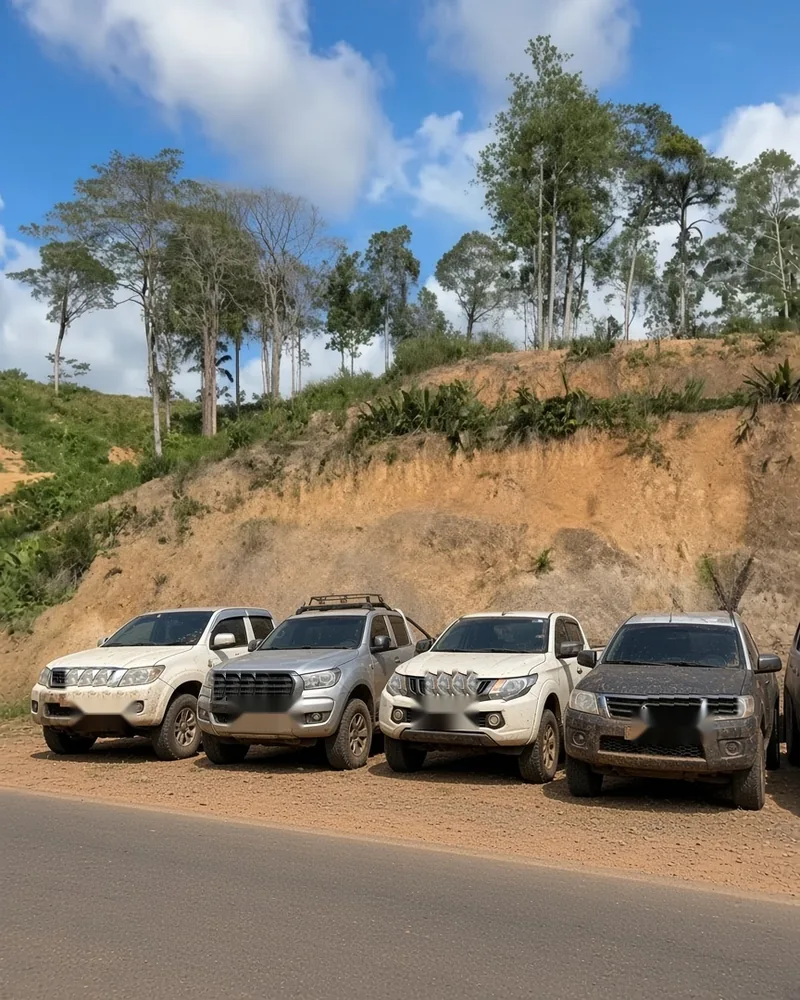
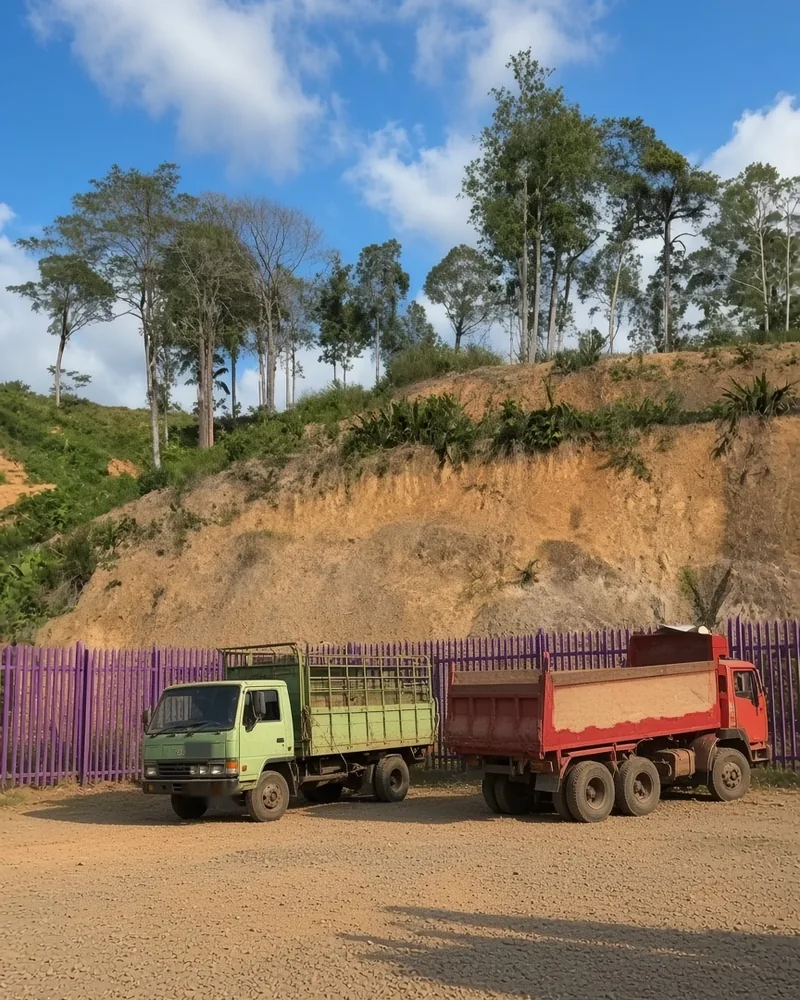
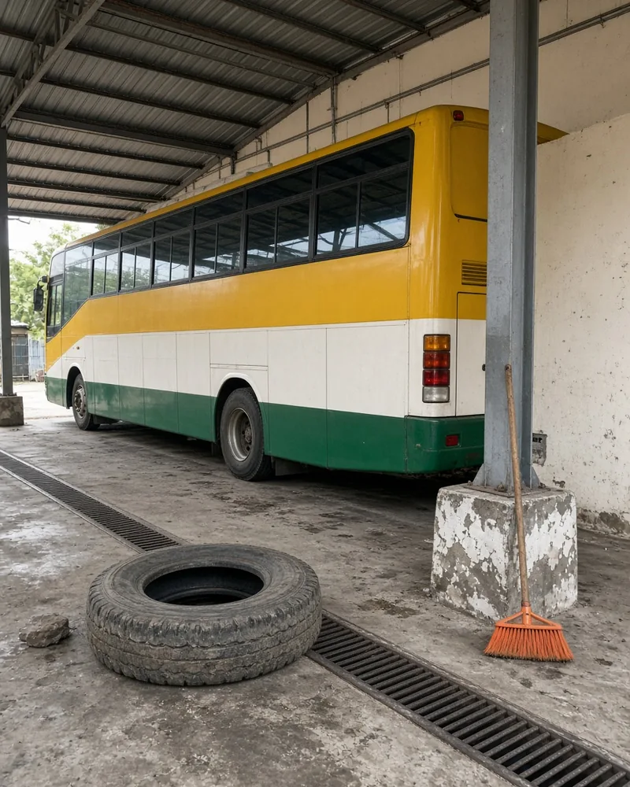

KH DIESEL FUEL PUMP SDN BHD 是位于民都鲁 Jalan Bintulu–Miri 的 Batu 10（十哩）柴油车厂。主要业务是柴油燃油泵、共轨泵、喷油嘴和涡轮。
Batu 10（十哩）车厂
车厂是一栋米色两层楼建筑，设有场地和前方雨棚，靠近 Kampung Penan Muslim Batu 10 和 Jalan Nyabau。室内有洁净室，绿色地面上挂着条状门帘，并配有泵试验台；另有独立的共轨试验室、涡轮和备件架，以及后方的重型发动机工位。

工作性质
泵、喷油嘴和涡轮在维修前会先测试，修后再次测试。客户送来的有柴油皮卡、轻型货车、货车、大巴和重型机械。







维修流程
- 通过 WhatsApp 发照片发送零件照片，并告诉我们车辆或机器的信息。
- 检测在车厂检查泵、喷油嘴或涡轮。
- 报价开始任何维修前，您会先收到检测结果和报价。
- 维修您同意后才会开始维修零件。
- 测试结果维修后会再次测试，您在装回前可以看到结果。
找到车厂
Sublot 14 of Parent Lot 1337 & Lot 341, Block 33, Kemena Land District, 97000 Bintulu, SarawakBatu 10（十哩），Jalan Bintulu–Miri，民都鲁
| 星期一至星期六 | 上午8:00至下午5:30 |
|---|---|
| 星期日 | 休息 |
马来西亚时间（民都鲁）
曾在这里做过维修？ 一则简短的 Google 评论，能帮助民都鲁的其他柴油车主找到这家车厂。
写 Google 评论